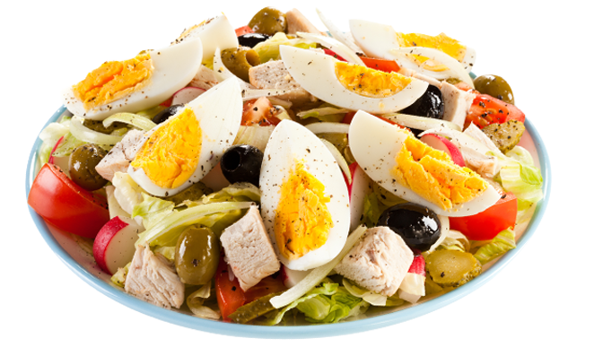

My salade recipe

Seattle Nicoise
Ingredients
- ¾ pound chunked (not thin sliced), Alaska-style smoked salmon
- 1 cup bottled champagne salad dressing
- sea salt and freshly ground black pepper to taste
- 4 ounces pickled green beans, cut in thirds
- 1½ pounds new potatoes, red or yellow, scrubbed
- 3 medium tomatoes, quartered
- 5 eggs, hard cooked and peeled, then quartered
- ½ cup nicoise or other small, black, pitted olives
Salade
- Break the salmon into large but still bite-sized chunks and set aside.
- Boil the new potatoes for about 15 minutes in salted water, till they are just cooked through (you can run a sharp knife through one) but not falling apart.
- Drain completely, and then cut into bite-sized chunks. Place in a large bowl and pour half of the dressing over them.
- Add the egg wedges, beans, olives, tomatoes and salmon chunks. Drizzle vinaigrette to taste, then salt and pepper as desired. Gently stir together and serve warm.